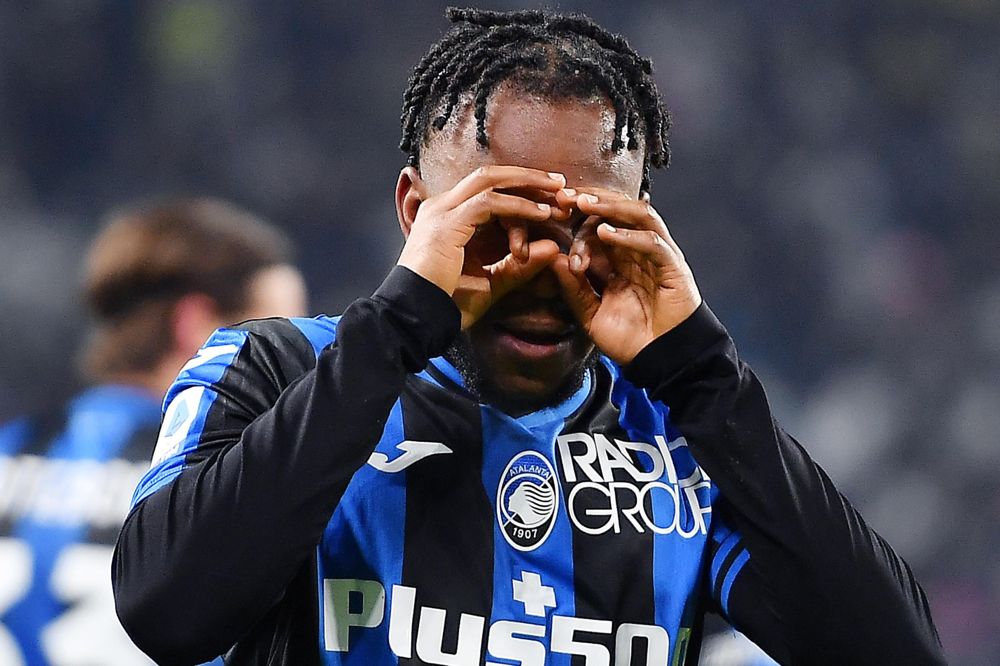

Atalanta
Bienvenidos a Bergamo

Equipo de la Seria A
La reina de las provincias
Es el equipo que más ediciones de Serie A ha disputado sin representar a una capital de región LA DEA

La Atalanta Bergamasca Calcio , es un club de fútbol profesional con sede en Bérgamo, Lombardía, Italia. Juega en la Serie A, tras haber obtenido el ascenso en la temporada 2010-2011. Es el equipo que más ediciones de Serie A, ha disputado sin representar a una capital de región, por ello se la considera la Reina de las Provincias. Pero también es el conjunto que ha jugado más veces en la primera división italiana que nunca ha ganado un scudetto. Por el contrario, junto al Genoa, es la escuadra que más ocasiones ha ganado la segunda división, seis, y más ascensos a primera, trece. En su palmarés aparece un titulo de copa conseguido en la temporada 1962-63. Alcanzó las semifinales de la Recopa de Europa en 1988, cuando jugaba en Serie B..
Historia llena de altibajos
El equipo bergamasco que esta peleando con los grandes italianos, ARRIBA DEA
Atalanta Bergamasca Calcio El equipo bergamasco
Fue fundado el 17 de Octubre de 1907. El 20 de Febrero de 1920, se fusiona con otro club de la ciudad de Bérgamo llamado Bergamo. En el año 1937, debuta en la Serie A. Desde entonces se alternaron periodos de estabilidad en el fútbol de élite con fases de oscilación entre la Serie A y la Serie B. Los mejores puestos los logró en la temporada 2016-17, cuando terminó cuarto, y en la temporada 2018-19, tercero.


Estadio
Atleti Azzurri d'Italia, Bérgamo, Italia
Atleti Azzurri d'Italia Estadio del Atalanta
El Atleti Azzurri d'Italia es un estadio de fútbol de Bérgamo, Italia, que acoge los partidos como local del Atalanta. El aforo del estadio es de 24.642 asientos. En las dos temporadas que jugó la UEFA Europa League (2017-18 y 2018_19), el Atalanta ejerció como local en el MAPEI Stadium de la ciudad de Reggio Emilia, ya que su estadio "no cumplía con los mínimos exigidos" para competiciones europeas y en la temporada 2019-20 para disputar la UEFA Champions League ejerció como local en el estadio San siro.


Brescia
Por lo menos yo jugue una final internacional
Reacciones al post
-
 Jose
Jose
Yo no creo que seas un equipo que pueda pelear con los más grandes por ahora. -
 Hernan
Hernan
Atalanta el más grande -
 Freddy
Freddy
No mejor el Brescia vamos -
 Julián
Julián
La dea, la diosa, el mejor equipo de Italia
Tags
Juventus Atalanta Brescia Inter AC Milan Napoli Roma Genova CFC Fiorentina Lazio Sampdoria Cagliari Salernitana Torino
Inspiration

Follow Me
Subscribe
Enter your e-mail below and get notified on the latest blog posts.